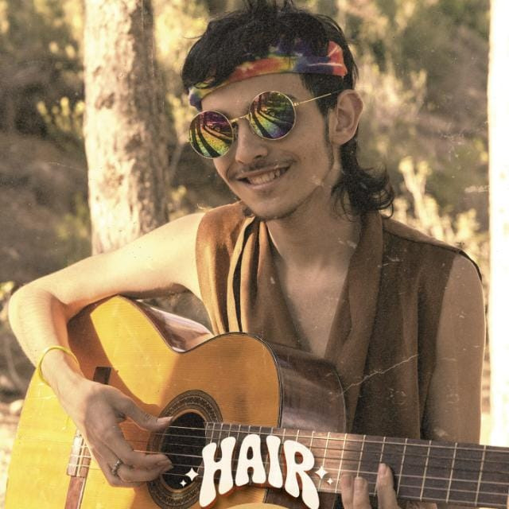

Mario Marco
Actor, músico y programador
Actor, guitarrista y creador en formación. Me apasionan la interpretación, la música, el deporte, el cine y la tecnología. Siempre estoy aprendiendo, creando nuevos proyectos y buscando nuevas formas de mejorar y expresarme.

@mario_guitar011España